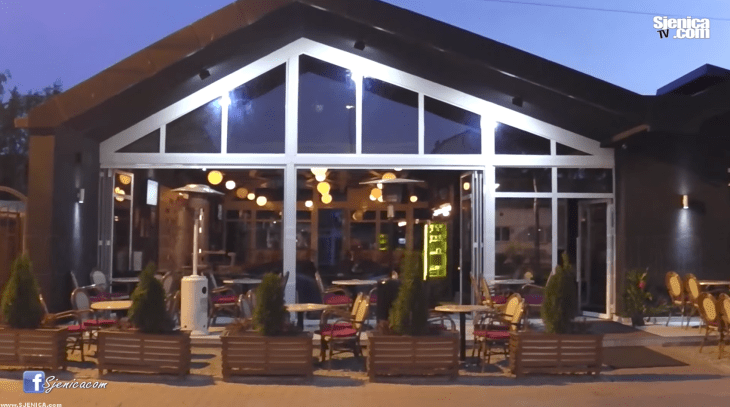
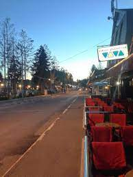
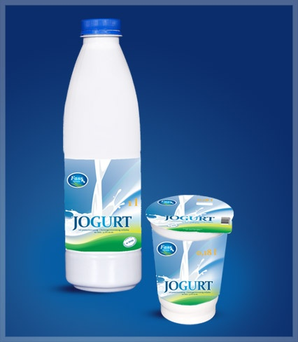

O Nama
Turistička organizacija Sjenice, jedna od najmlađih u Srbiji, osnovana je sa idejom da Vaš boravak na Pešterskoj visoravni učini prijatnijim, da Vas upozna sa turističkim potencijalima ove visoravni i da Vam pomogne u svakoj neplaniranoj situaciji. Naš ured, naše osoblje i naši kontakti Vam stoje na raspolaganju za svaku informaciju koja Vas zanima o našem lepom kraju.
Dobrodošli na Peštersku visoravan, želimo Vam prijatan i nezaboravan odmor!
Turistička organizacija Sjenice, jedna od najmlađih u Srbiji, osnovana je sa idejom da Vaš boravak na Pešterskoj visoravni učini prijatnijim, da Vas upozna sa turističkim potencijalima ove visoravni i da Vam pomogne u svakoj neplaniranoj situaciji. Naš ured, naše osoblje i naši kontakti Vam stoje na raspolaganju za svaku informaciju koja Vas zanima o našem lepom kraju.
Dobrodošli na Peštersku visoravan, želimo Vam prijatan i nezaboravan odmor!
Zanimljivosti
Sjenica je, po jednom tumačenju, ime dobila po bogatstvu trave – sena, jer na staroslovenskom jeziku Sjenica znači – „zemlja sena“.
Već na prvi pogled ovo tumačenje sasvim je prirodno i logično – ali samo leti. Tada je Sjenica zaista „zemlja sena“, ceo gradić gubi se u moru pašnjaka i veštačkih livada, koje je teško okom pregledati, i koje sa svih strana opkoljava gradska naselja, preti da „proguta“ kuće po obodima grada.
U pozno leto polja ogole, ali ostanu načičkana nebrojenim stogovima, niknu tada stogovi sena i po samom gradu, sve do najstrožeg centra, pa je Sjenica tada i bukvalno – zemlja sena
Sjenica je, po jednom tumačenju, ime dobila po bogatstvu trave – sena, jer na staroslovenskom jeziku Sjenica znači – „zemlja sena“.
Već na prvi pogled ovo tumačenje sasvim je prirodno i logično – ali samo leti. Tada je Sjenica zaista „zemlja sena“, ceo gradić gubi se u moru pašnjaka i veštačkih livada, koje je teško okom pregledati, i koje sa svih strana opkoljava gradska naselja, preti da „proguta“ kuće po obodima grada.
U pozno leto polja ogole, ali ostanu načičkana nebrojenim stogovima, niknu tada stogovi sena i po samom gradu, sve do najstrožeg centra, pa je Sjenica tada i bukvalno – zemlja sena
LEGENDE
Legenda o Aliji Đerzelezu
Legenda o Znajevcu
"dolina vukova"
VaVaZu caffe

VIVA caffe

Fass mlekara
